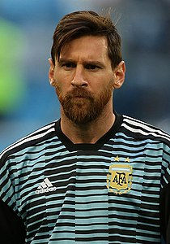

Lionel Andrés Messi Cuccittini, també conegut com a Leo Messi (Rosario, Argentina, 24 de juny de 1987), és un futbolista argentí[3] que juga com a davanter en el Paris Saint Germain de la Ligue 1 i en la selecció de l'Argentina, de la qual n'és capità. Formà part de la plantilla del Futbol Club Barcelona fins al 5 d'agost de 2021, quan el Club anuncià que definitivament «malgrat haver-se arribat a un acord entre el FC Barcelona i Leo Messi i amb la clara intenció de les dues parts de signar un nou contracte», no es pogué formalitzar «a causa d'obstacles econòmics i estructurals (normativa de LaLiga espanyola)».[4] Els obstacles econòmics i estructurals als quals es referí el club eren bàsicament la normativa del "límit salarial", un mecanisme que la Lliga va inst
